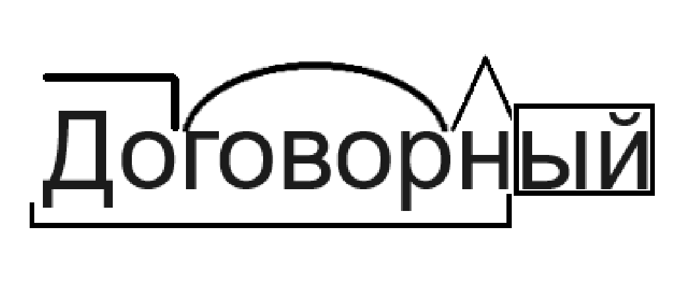

Морфемный разбор - самый простой разбор в русском языке. Его начинают делать еще в начальных классах. Морфемным он называется потому, что в ходе его выполнения нужно указать все морфемы.
Морфема - это наименьшая единица языка с лексическим и грамматическим значением.
Пример морфемого разбора слова:
Этот разбор одинаковен ко всем частям речи!